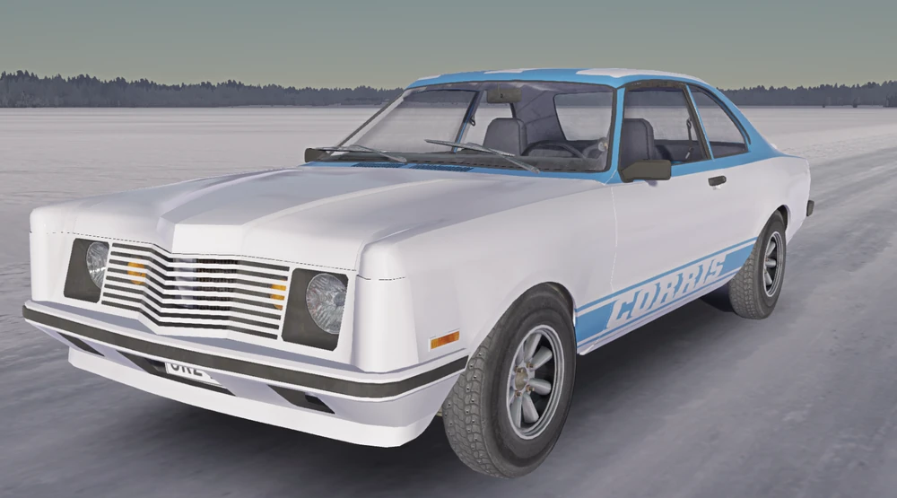

Corris Rivett Workshop Manual
The Definitive Guide for My Winter Car Builders

Introduction
Welcome to the official Corris Rivett Workshop Manual. This guide is designed to provide you with all the necessary information regarding vehicle inspection requirements, factory specs, and tuning capabilities.
Manual Chapters Included:
Engine: Assembly, Mounting, Exhaust Systems.
Chassis: Bodywork, Suspension, Generic Engine Bay, Gearbox, Interior.
Wiring & Tuning: Full wiring diagrams, Carburettor tuning, Distributor tuning, and Wheel alignment.
Important Notice for Builders
To uphold the highest factory standard, it is strongly recommended to only purchase factory quality parts for ultimate part longevity. Aftermarket camshafts do NOT pass as a factory vehicle feature in an inspection.